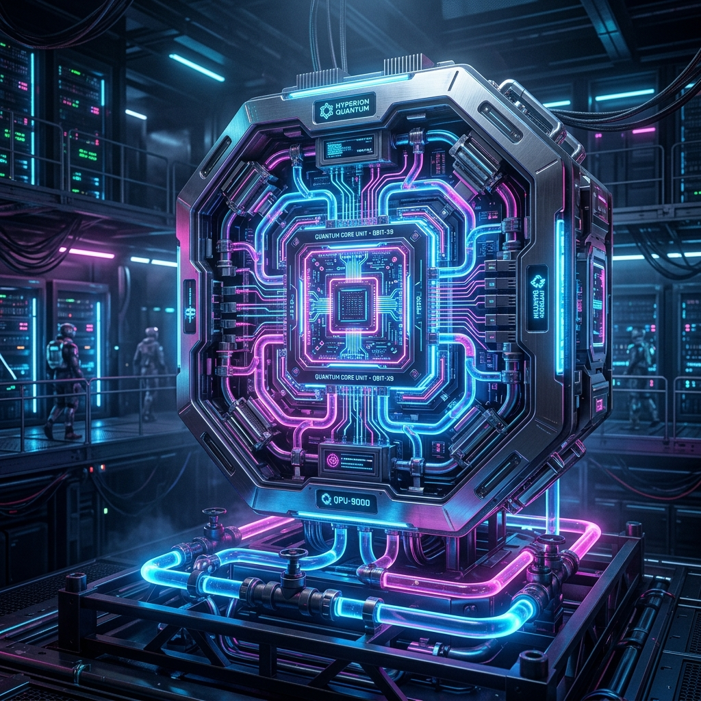
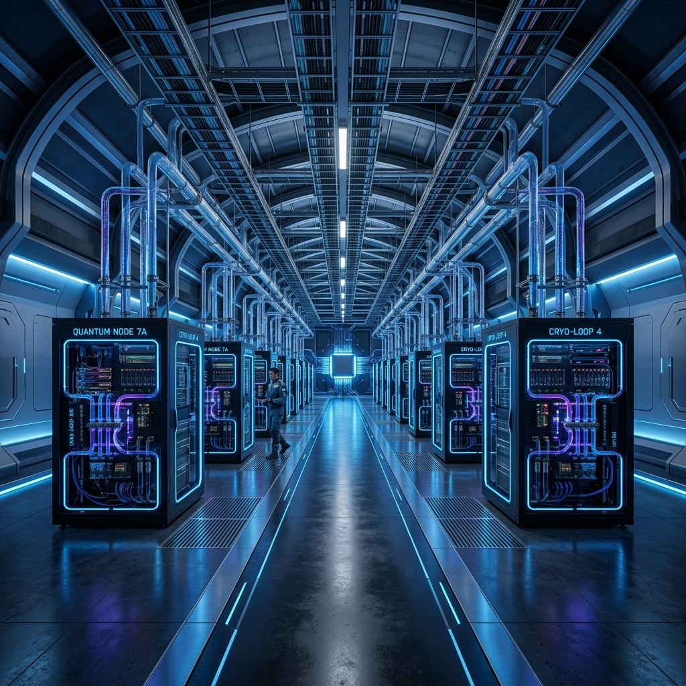
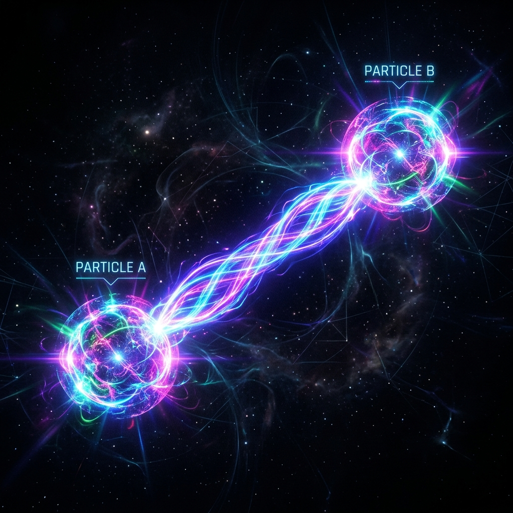

DECODING THE NEXT DIMENSION

传统半导体技术已接近物理极限。量子计算利用量子叠加与纠缠，在特定复杂算法上实现指数级的性能飞跃。
量子比特可同时处于 0 和 1 的状态，极大扩展了并行计算的深度。
比特间的瞬时关联，构建起超越地理限制的高速信息通道。
极低温环境下的精密控制，确保量子状态的稳定性与计算精度。
全新的逻辑门操作，针对传统难题如大数分解提供革命性解法。

我们最新的超导量子芯片实现了 1024 个物理量子比特的稳定排布。采用三维超导布线技术，有效降低了比特间的串扰。
精确模拟复杂化学反应，加速新药研发与新材料发现，缩短研发周期 90%。
利用量子蒙特卡洛算法进行风险评估与资产组合优化，实现毫秒级响应。
开发抵御量子攻击的全新加密算法，守护数字时代的底座安全。

目前最成熟的路径，支持高扩展性。
具备极长的相干时间与超高门保真度。
室温下运行，具备分布式计算潜力。
理论上最具免疫性的量子计算形态。
物理比特数量上限。
逻辑门操作的准确度。
系统的综合处理能力。
比特读取与运算的错误率。
极低温环境下的能效比。
过去三年中，量子比特的数量正遵循“量子版摩尔定律”实现跨越。预计 2027 年将实现百万级比特突破。
生物制药领域的分子模拟需求最为迫切，占据了近一半的早期市场份额。
量子计算已成为大国科技博弈的核心战场。公共事业预算占比正逐年攀升。
为了保持超导状态，芯片必须工作在接近绝对零度 (15mK) 的环境中。您所听到的是超低温稀释制冷机的运行噪音。
FILE: SYSTEM_COOLING_LOG.WAV
在这段实验室实录中，我们展示了如何通过辅助比特实时监控并修正量子逻辑门的运行错误，这是实现通用量子计算的关键基石。
通过逻辑纠错量子位，我们成功在 30 分钟内完成了传统超算需要 1000 年才能完成的质因数分解任务。
此实验标志着传统公钥加密体系的终结，促使全球主流银行加速向格密码学 (Lattice-based) 迁移。
包括稀释制冷机、超导线缆、低温电子学套件等精密硬件供应。
量子芯片设计、整机组装及量子操作系统的开发与维护。
面向化工、金融、人工智能等行业的定制化算法服务。
4.5 GHz 超导谐振腔频率。
T1/T2 均值突破 500μs。
99.9% 单比特非破坏性读取。
10 Gbps 低温微波控制链路。
企业无需承担昂贵的维护费用，通过云端 API 即可按计算任务量支付费用，极大地降低了量子门槛。
适用于算法验证与学生教育。
提供真机优先权与 128Q 仿真。
独占算力池与私有部署支持。
确保量子算法在复杂决策（如信贷、资源分配）中不产生歧视性偏差。
推动建立《全球量子计算安全公约》，防止量子武器化与极端算力垄断。
深耕凝聚态物理，探索拓扑保护的新边界。
打造极低温下的高频控制系统与微波链路。
将复杂的数学模型翻译为高效的量子线路。
TERMINATING SESSION... SYSTEM STANDBY